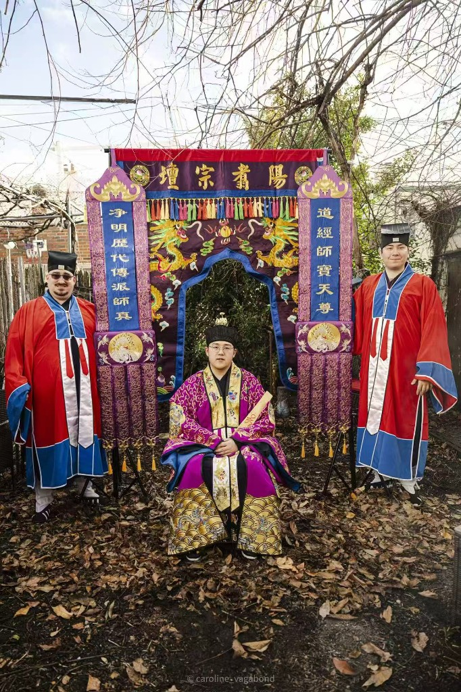

许天师圣诞祝寿祈福法事公告
农历正月二十八为净明祖师：神功妙济真君净明普化天尊许天师圣诞。为恭祝祖师圣诞，祈福消灾、增福延寿，美国阳翥道教协会特举行许天师圣诞祝寿祈福法事，依科设坛，上表启奏，以祈福消灾。
法会时间
2026年3月15日（星期日）
下午 1:00 – 3:00 PM
此时正值中国农历正月二十八
地点
28-35 45th St, 3A
Astoria, NY 11103
欢迎信众随喜功德参加法事上表祈福，请提供：姓名、生辰。亦可单独上表祈福。欢迎到场的善信自带鲜花果品供奉。
上表祈福，可求：
消灾解厄
延寿增福
身心安泰
事业顺利
财运亨通
家庭和合
诸事吉祥
本次法事由美国阳翥道教协会会长，净明派第二十六代嗣法弟子：吉法新道长主持。欢迎广大信众及皈依居士踊跃参加，恭祝圣寿，同沐恩光，共祈福佑。无法到场的信众将提供法会的照片视频。

净明忠孝道收徒仪式
丙午年正月十九日，美国阳翥道教协会会长吉法新喜收净明忠孝道第二十七代弟子胡源明。为首位美国净明弟子，已明确师承，人神皆知。


正一皈依法会
2026年1月11日，美国阳翥道教协会举行正一皈依法会，依循正统科仪，宣戒授号，上表奏告，仪式庄严肃穆，圆满完成。皈依，是信士正式归入道门的重要仪式，象征确立信仰方向，开启修行之路。通过传统仪轨，参与者在天地神明之前立志向道，成为道教正式皈依居士。本次法会吸引了来自不同国家与文化背景的参与者，不仅有华人信众，也有来自美国、澳大利亚等地的人士正式皈依道教。这显示出道教文化在当代国际社会中的持续传播与广泛吸引力，体现了传统宗教在跨文化语境中的生命力与实践价值。美国阳翥道教协会将继续秉持正统传承与规范发展的原则，推动道教文化在国际社会中的稳步发展与深入交流。


乙巳年小开光法会
举行传统道教开光仪式，为道教法器和符印开光加持，弘扬正统道教科仪传承。


甲辰年年终祈福酬神法会
年终举行祈福酬神法会，感谢神明护佑，祈求新年平安吉祥，体现道教感恩与祈愿的精神传统。